Gallery
Favorite photos from the last two years.
The live site positions these as moments from campaign work, student organizing, and meetings with public figures.
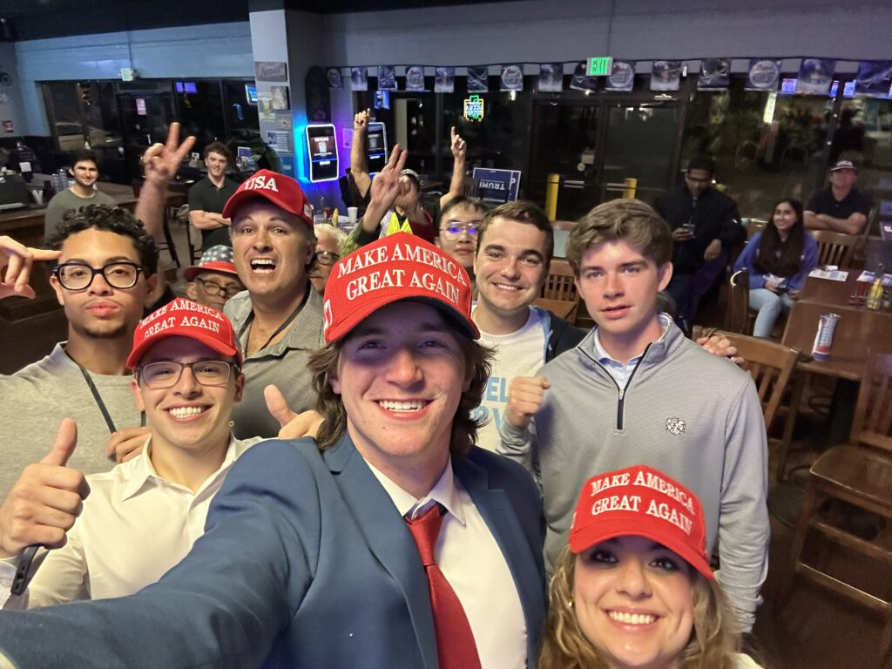
While I was working with UNC-Chapel Hill College Republicans and various campaigns during the 2024 election cycle, I was honored to meet so many high-profile individuals over the past two years. Here are some of my favorite photos from along the way.
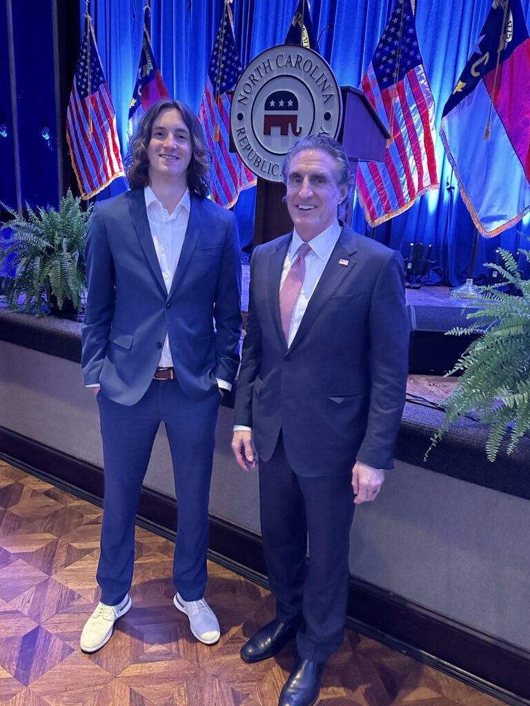
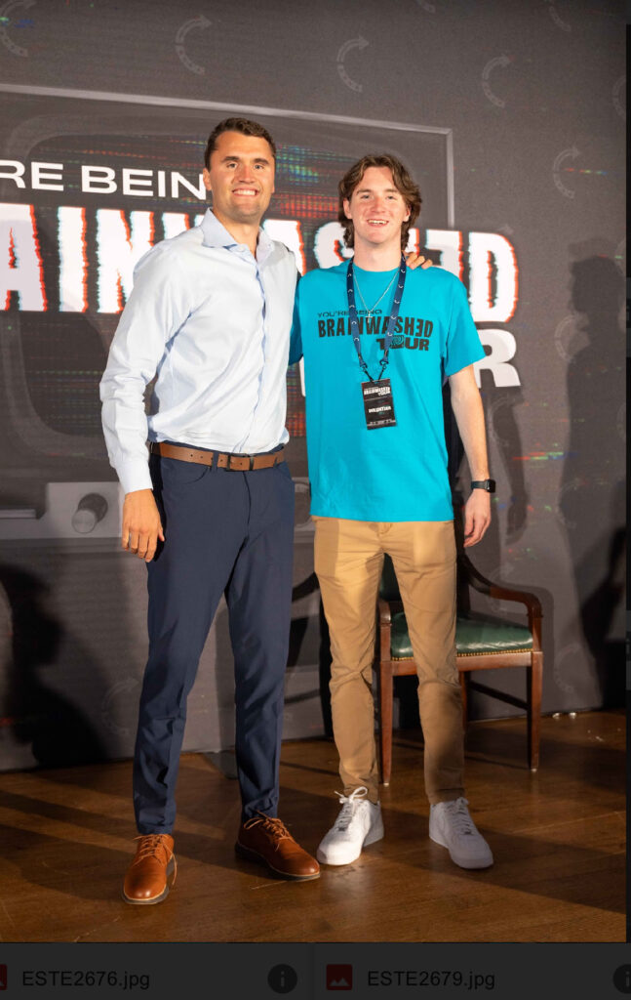
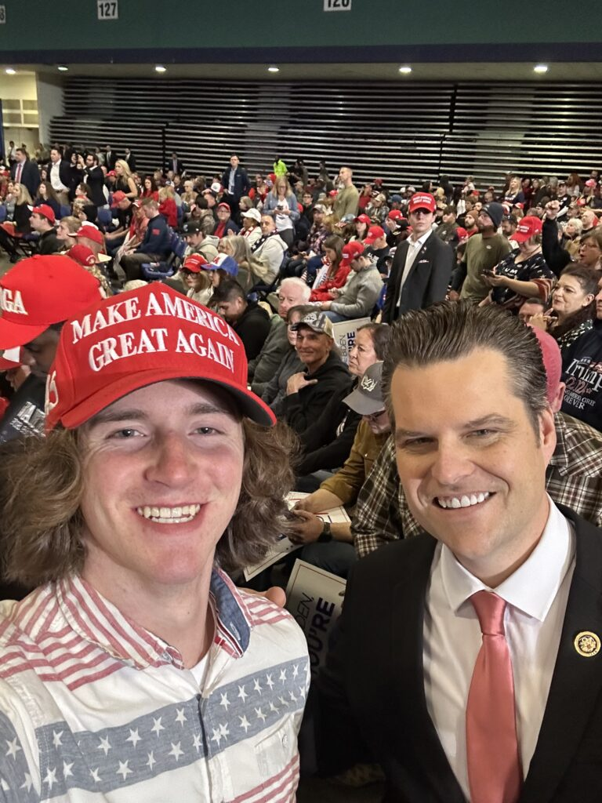
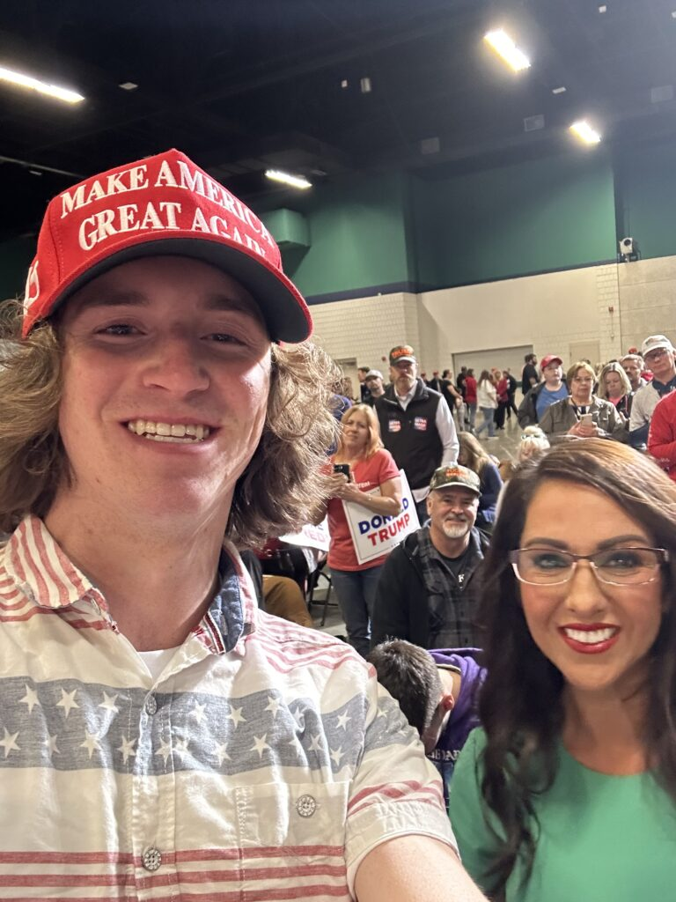
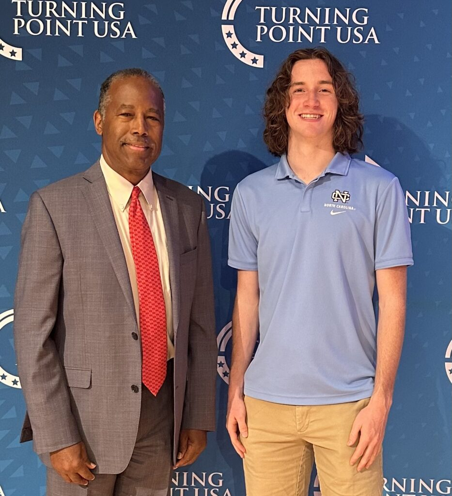
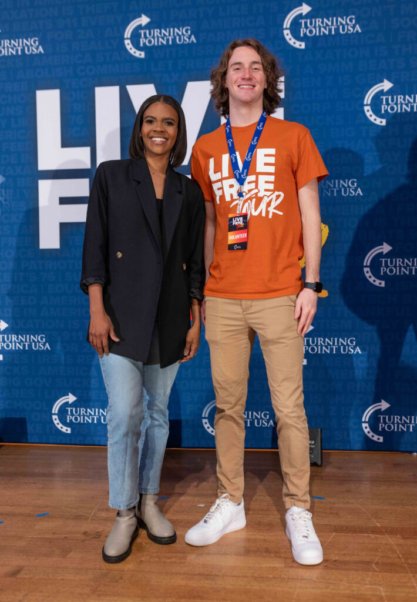
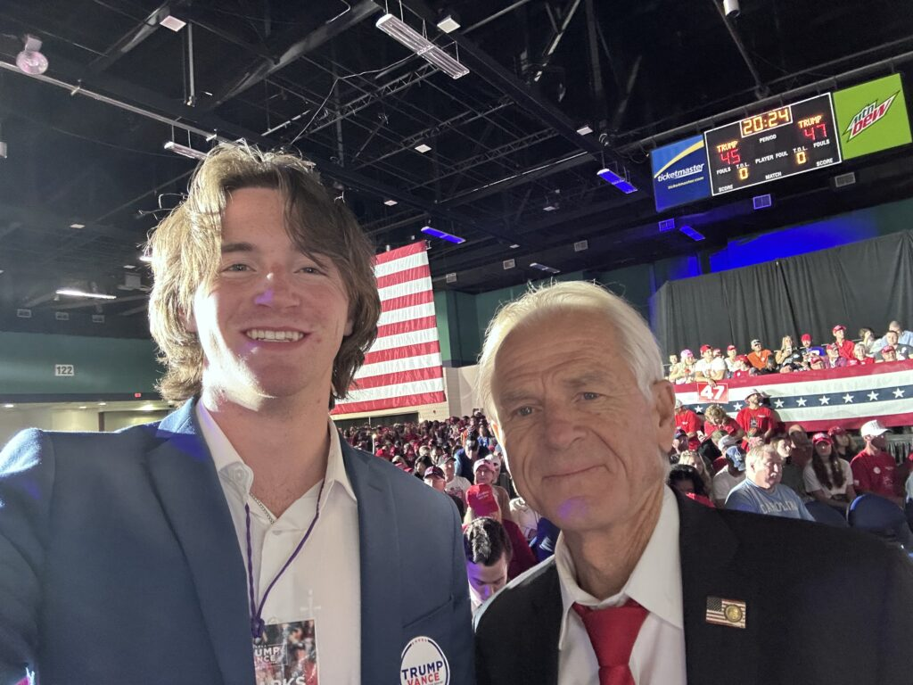
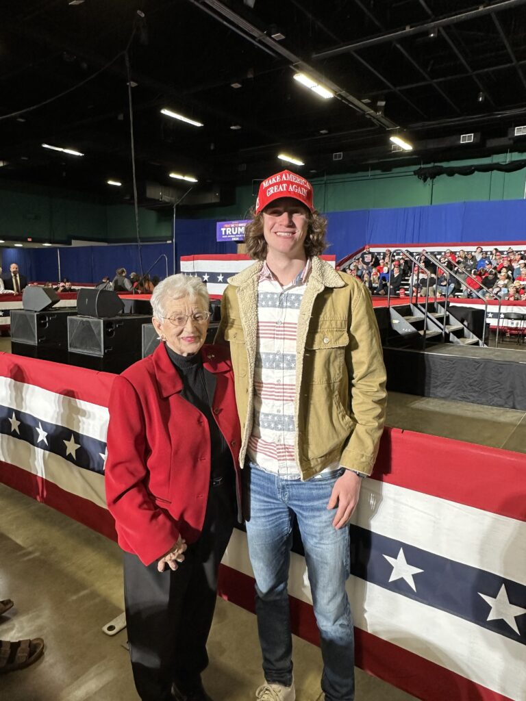
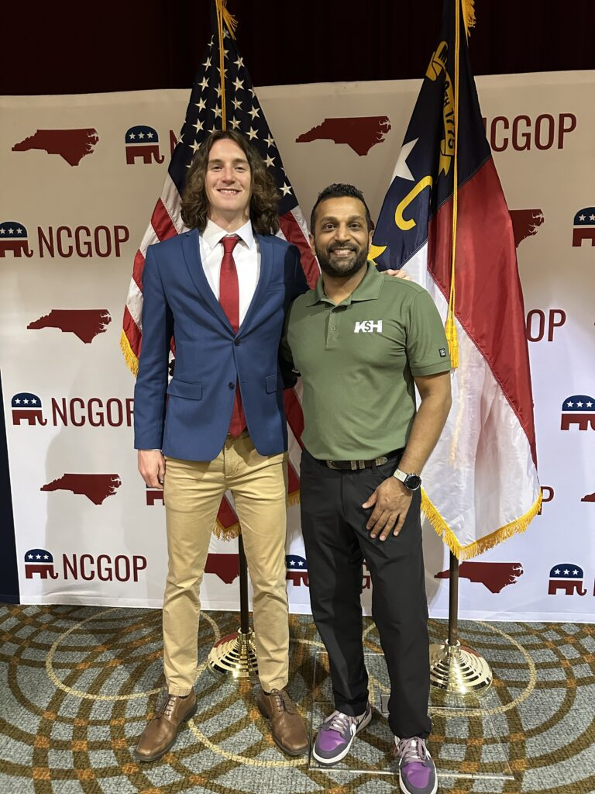
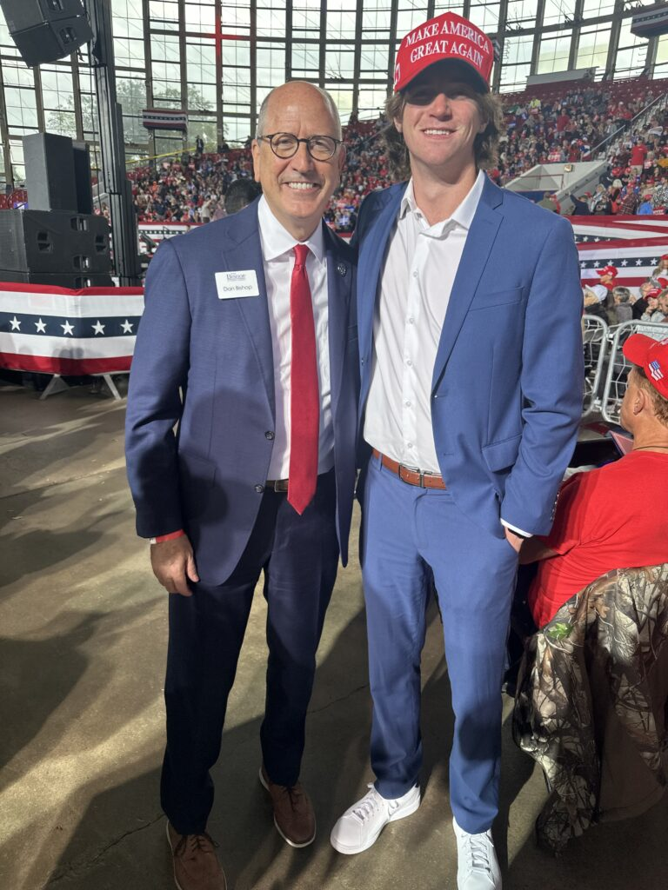
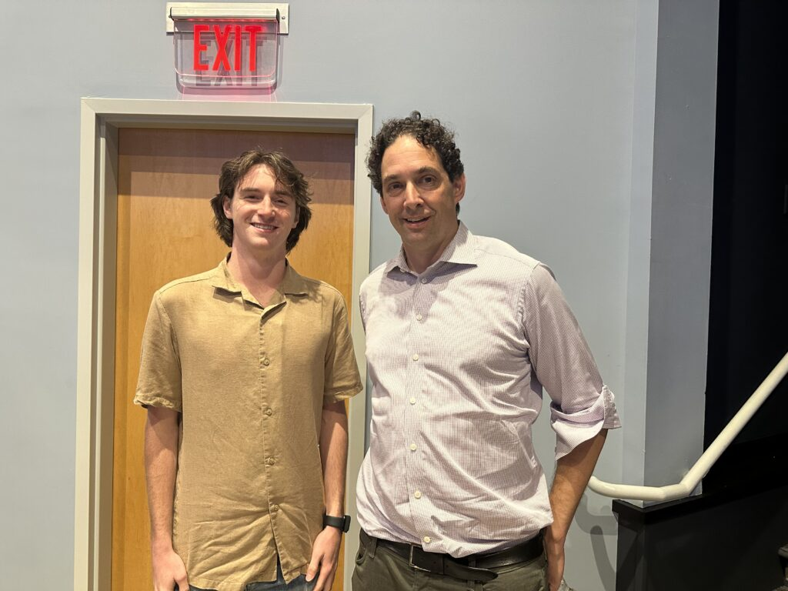
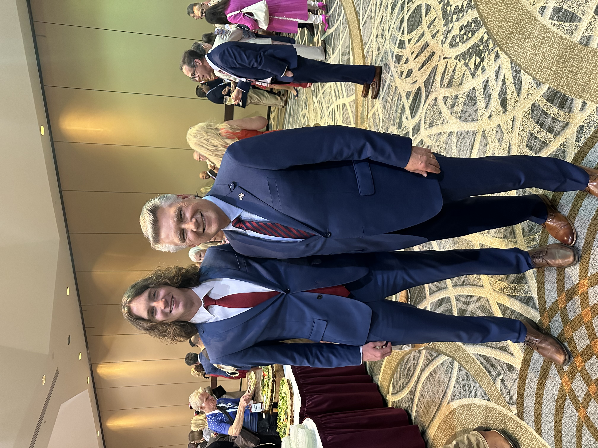